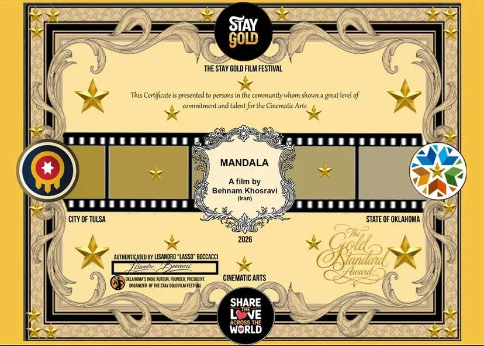

فیلم کوتاه «ماندالا» به نویسندگی و کارگردانی بهنام خسروی در چهارمین حضور بینالمللی خود، موفق به کسب جایزه Golden Standard Award از چهارمین دوره Stay Gold Film Festival شد؛ افتخاری تازه که یک بار دیگر نام این فیلم کوتاه ایرانی را در فهرست برگزیدگان یک جشنواره معتبر بینالمللی ثبت کرد.
نمایش این فیلم در بخش رسمی جشنواره، روز ۲۸ ژوئن ۲۰۲۶ برگزار شد و نتایج نهایی و برندگان جشنواره در تاریخ ۴ جولای ۲۰۲۶ اعلام شدند. هیئت داوران این جشنواره، فیلم «ماندالا» را به دلیل روایت تأثیرگذار، کیفیت هنری، خلاقیت و استانداردهای بالای فیلمسازی مستقل، شایسته دریافت این جایزه دانستند. Golden Standard Award یکی از جوایز ویژهای است که Stay Gold Film Festival به آثاری اهدا میکند که در مجموع عناصر روایی، اجرایی و بصری خود، فراتر از سطح معمول آثار مستقل ظاهر شده باشند.
جشنواره Stay Gold Film Festival در پیام رسمی خود ضمن تبریک به بهنام خسروی اعلام کرد که فیلم «ماندالا» با داستانپردازی برجسته، کیفیت هنری و نگاه خلاقانه خود، داوران را تحت تأثیر قرار داده و به عنوان یکی از آثار شاخص این دوره موفق به دریافت جایزه Golden Standard Award شده است. این جشنواره که هر ساله میزبان آثار کوتاه و بلند از فیلمسازان مستقل سراسر جهان است، تلاش میکند تا فیلمهایی را معرفی کند که با وجود بودجه و امکانات محدود، از نظر روایت و اجرا در سطحی قابل مقایسه با تولیدات بزرگتر قرار میگیرند؛ ویژگیای که به باور بسیاری از داوران این دوره، دقیقاً همان چیزی بود که «ماندالا» را از میان رقبای متعدد خود متمایز کرد.
این جایزه، چهارمین دستاورد بینالمللی «ماندالا» به شمار میرود؛ فیلمی که پیش از این موفق به کسب جایزه بهترین فیلم از جشنواره Accolade Global Film Competition شده، نامزد بهترین کارگردانی در دهمین جشنواره بینالمللی فیلم TINFF کانادا بوده و به بخش رسمی جشنواره بینالمللی فیلم پونه در هندوستان نیز راه یافته است. حضور پیوسته «ماندالا» در چرخه جشنوارههای بینالمللی طی یک سال گذشته، نشان میدهد این اثر کوتاه ایرانی توانسته با مضمون هویت و فراموشی خود، مخاطبان و داوران را در فرهنگها و جغرافیاهای متفاوت تحت تأثیر قرار دهد.
بهنام خسروی، نویسنده و کارگردان «ماندالا»، در واکنش به این خبر، دریافت جایزه Golden Standard Award را دلگرمکننده توصیف کرد و آن را نشانهای از تأثیرگذاری فیلم کوتاه ایرانی در سطح بینالمللی دانست. او همچنین از تیم سازنده «ماندالا» و همراهی آنها در طول مسیر تولید و پستولید این فیلم قدردانی کرد.
با افزودهشدن Golden Standard Award به فهرست افتخارات «ماندالا»، این فیلم کوتاه اکنون در میان معدود آثار مستقل ایرانی قرار میگیرد که در یک بازه زمانی کوتاه، موفق به کسب جوایز و نامزدیهای متعدد از جشنوارههای مختلف در قارههای گوناگون شدهاند. تیم مستر شورتفیلم ادامه مسیر این فیلم در جشنوارههای پیشرو را دنبال و در همین بخش وبلاگ بهروزرسانی خواهد کرد.
منبع خبر: اینستاگرام sevenskies.distribution